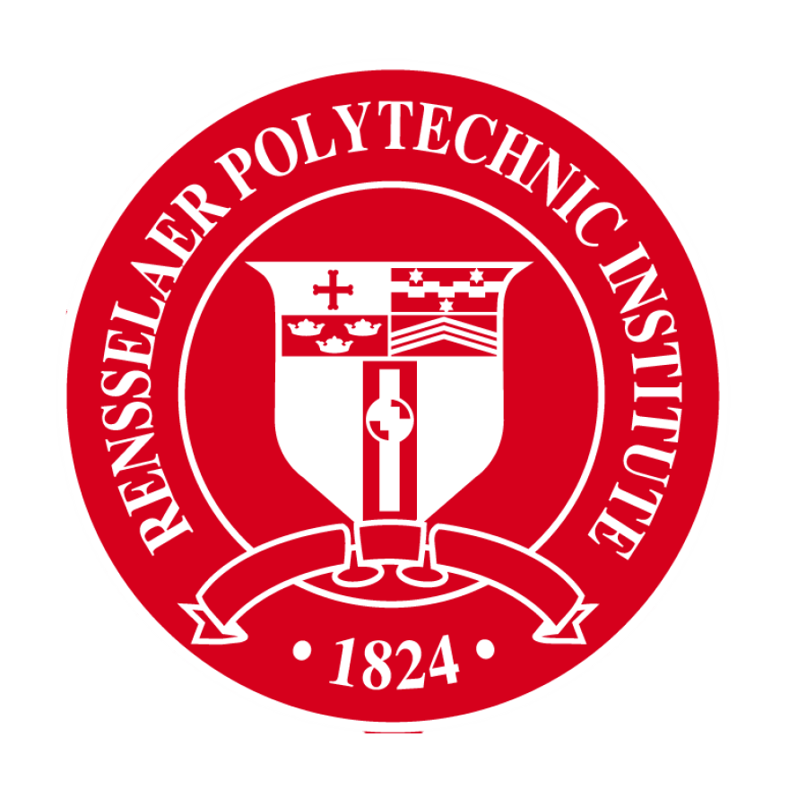

About me
My passion for electrical engineering comes from the belief that the knowledge I am learning can help solve real-world problems. Space exploration is equally fascinating to me, and even if I may never go there myself, I hope my studies and future work will contribute to this frontier in some way.
Education

Rensselaer Polytechnic Institute
M.S. in Electrical Engineering (Merit Scholarship) Jan 2025 – May 2026
M.S. in Electrical Engineering (Merit Scholarship) Jan 2025 – May 2026
- Coursework: Advanced Electronic Circuits; Internetworking of Things; Modern Communication System; VLSI Design; Nonlinear Control Systems; Systems Analysis Techniques
Nanjing University of Posts and Telecommunications
B.Eng. in Electronic Science and Technology (Bell Honors School) Sep 2020 - Jun 2024
B.Eng. in Electronic Science and Technology (Bell Honors School) Sep 2020 - Jun 2024
- Coursework:Optoelectronics; Semiconductor Physics and Devices; Principles of Laser; Physical Optics; Analog Electronic Circuits; Signals Analysis; Fundamental of Circuit Analysis
Experience
Analog Devices, Inc.
Application Engineer Intern Aug 2023 - Nov 2023
Application Engineer Intern Aug 2023 - Nov 2023
- Programmed a PyQt GUI for the ADIN1100 Ethernet PHY transceiver.
- Visualized real-time gyroscope signals using Fast Fourier Transform (FFT) and Hilbert–Huang Transform (HHT).
Beijing Hongmian Xiaoice Technology Co., Ltd.
AI Product Intern Jul 2022 - Aug 2022
AI Product Intern Jul 2022 - Aug 2022
- Conducted virtual human video generation and facial expression training using Microsoft’s Xiaoice AI model.
- Assisted in developing a digital twin platform as part of the project.
Projects
Real-Time Environmental Monitoring System for Greenhouses
Course Project, RPI Mar 2025 - Apr 2025
Course Project, RPI Mar 2025 - Apr 2025
- Developed a Raspberry Pi system to monitor temperature & humidity (DHT11), light (BH1750), and CO₂ (MH-Z19).
- Implemented MQTT with TLS and AES-CBC encryption, ensuring secure data transmission.
Disturbance-Resilient Nonlinear Control for Quadrotor UAVs
Course Project, RPI Mar 2025 - Apr 2025
Course Project, RPI Mar 2025 - Apr 2025
- Developed a Sliding Mode Control (SMC)-enhanced backstepping controller in MATLAB.
- Lowered position error by 50% and maintained stability under wind disturbance up to 10 m/s.
Advanced Electronic Circuits Design Contest
Course Design Contest, RPI Mar 2025 - Apr 2025
Course Design Contest, RPI Mar 2025 - Apr 2025
- Stabilized a source measure unit (SMU) source using frequency compensation in LTspice.
- Achieved desired output across a 400 pF–10 µF load capacitor range with bandwidth up to 5 MHz, winning 1st Prize.
Emotion Classification Based on EEG Signals Using a Transformer Model
Graduation Project, NJUPT Dec 2023 - Jun 2024
Graduation Project, NJUPT Dec 2023 - Jun 2024
- Designed a Transformer Encoder-based model to extract temporal and long-range dependencies from EEG signals.
- Reached 86% accuracy in emotion classification on the DEAP dataset.
Software Design - LCD Electronic Advertising Screen
Course Project, NJUPT Feb 2023 - Jul 2023
Course Project, NJUPT Feb 2023 - Jul 2023
- Designed circuit schematics in Proteus and programmed MSP430 microcontroller using IAR.
- Processed button inputs and dynamically switched content on LCD1602 display.
Design of a Microwave Sampler Module with Low Conversion Loss
Research Project, Southeast University Feb 2023 - Apr 2023
Research Project, Southeast University Feb 2023 - Apr 2023
- Constructed a microwave sampler module with ≤ -5dB conversion loss and ≥ 30dBc SFDR for IF < 200MHz.
- Published in 2023 International Conference on Microwave and Millimeter Wave Technology (ICMMT).
Digital Circuits and Logic Designs - Digital Capacitance Meter
Course Project, NJUPT Feb 2022 - Jul 2022
Course Project, NJUPT Feb 2022 - Jul 2022
- Generated high-frequency signals with 555 timers and counted pulses using 74160 for period measurement.
- Managed latch/reset via XC3550AN FPGA and displayed results on 3 C392 common-cathode tubes using CD4511.
Electroencephalogram Attention Recognition System and Method Based on Feature Selection
Research Project, NJUPT Sep 2021 - Feb 2022
Research Project, NJUPT Sep 2021 - Feb 2022
- Built an EEG attention recognition system using ReliefF, RFECV and SVM for feature selection and classification.
- Attained 94.5% accuracy and obtained a Chinese patent (CN114521903B).
Skills
Programming: Python, C/C++, Verilog
Tools: MATLAB, LTspice, IAR, Xilinx ISE, Cadence, Ubuntu
Technical Knowledge: CMOS, Amplifiers, Signal Processing, System Analysis and Modeling